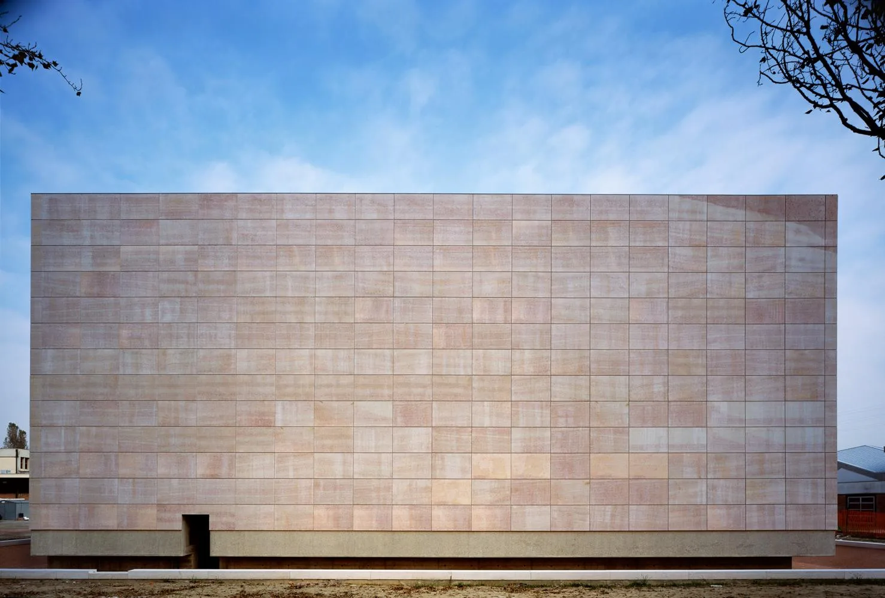
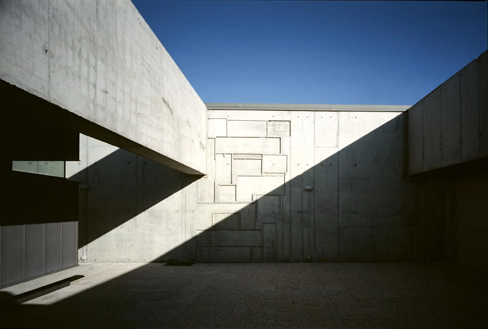
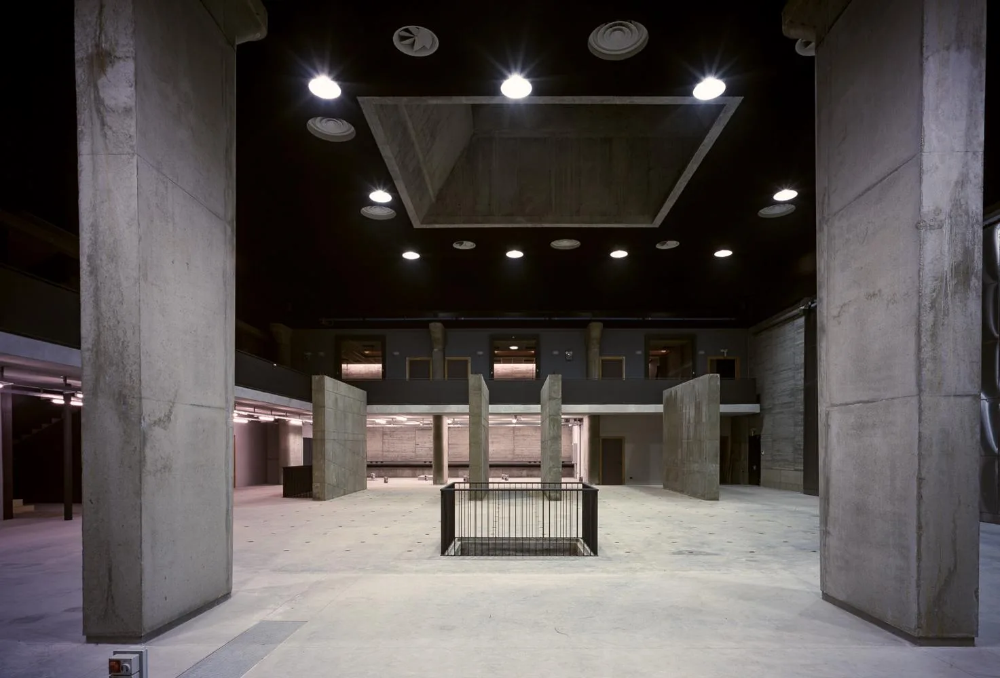
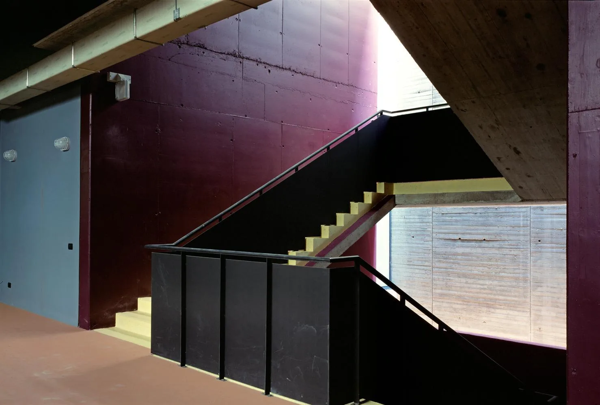
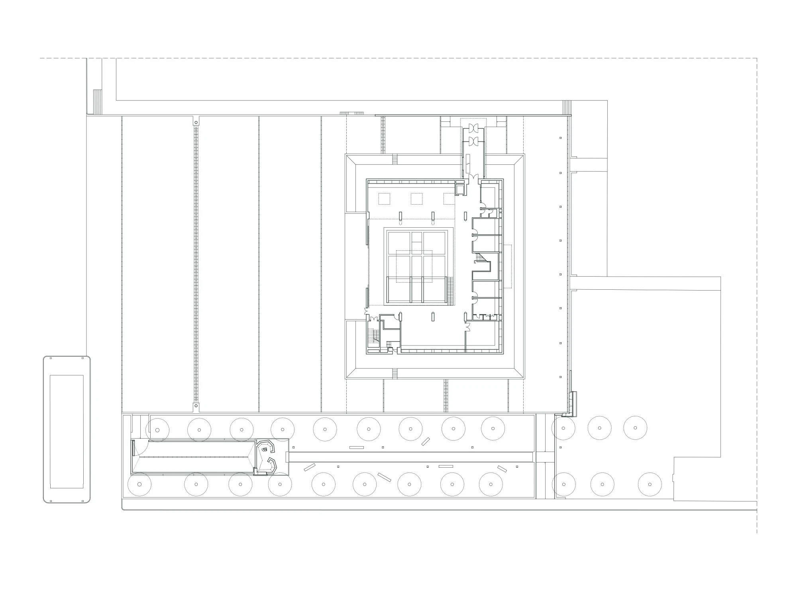
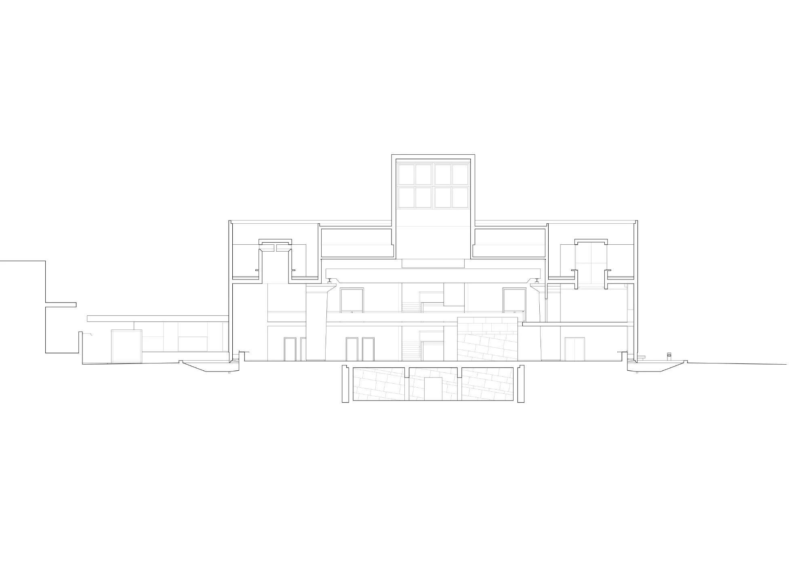
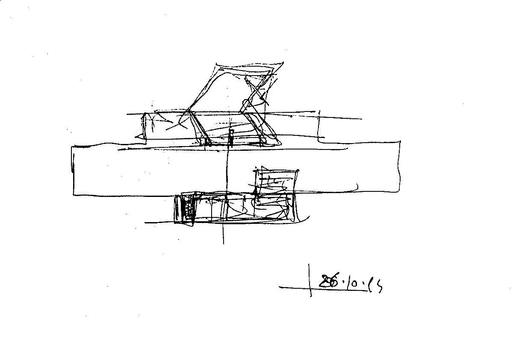
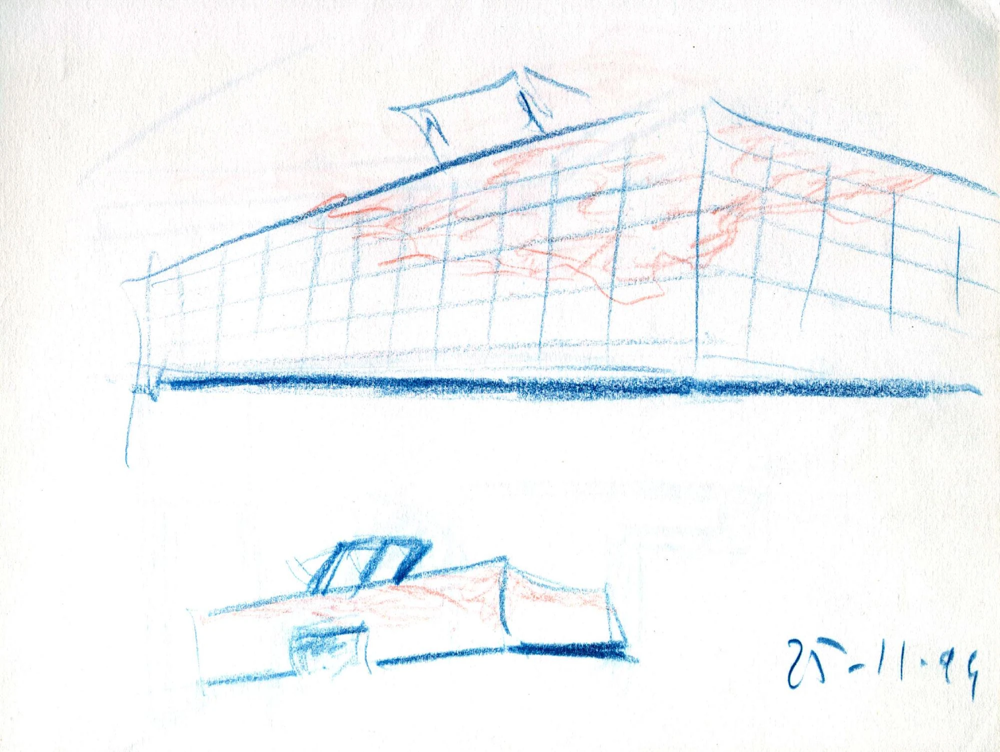
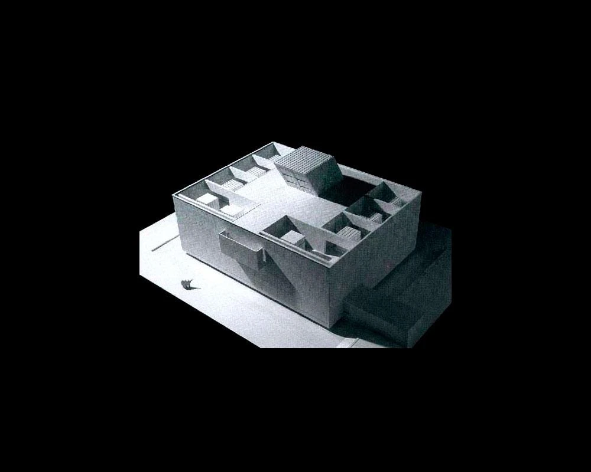
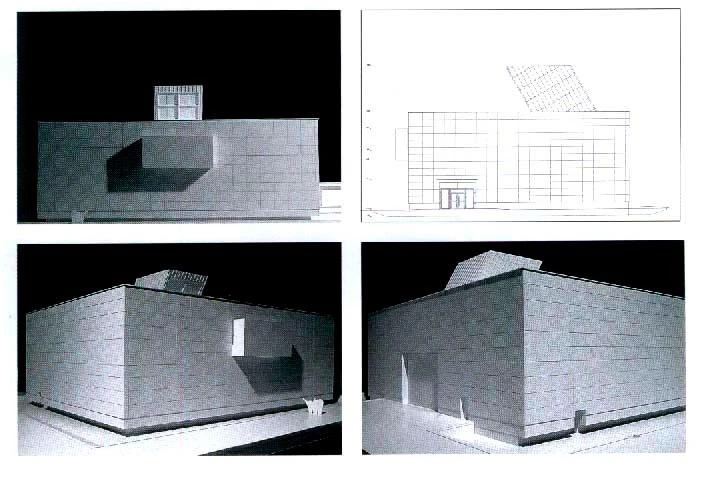

University materials and structures laboratory · 2003
IUAV Materials Testing Laboratory
Francesco Venezia
Mestre, Italy
University researchers combine structural investigation with physical tests on materials and building components. Laboratories, teaching rooms and offices share a building centred on heavy testing equipment.
The building is conceived as a protective shell over a testing core, including reinforced concrete walls extending below ground and an overhead crane. A glazed slit around the base and a large rooflight bring daylight into an interior with an otherwise industrial programme.


Relevant connections
MAKE
Laboratory equipment enables physical testing of materials and structural components.
Images and drawings / 10

















